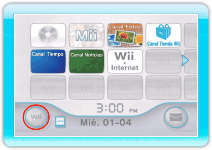
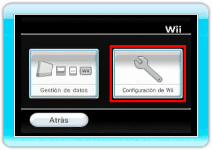
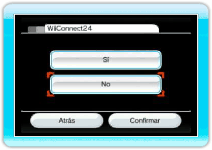

Para proteger tu privacidad, te aconsejamos que nunca des ningún tipo de información personal, como tu nombre, número de teléfono, fecha de nacimiento, edad, escuela, correo electrónico o dirección postal durante tus comunicaciones con terceros.
El Contrato de Uso de los Servicios de Red de Wii que rige la política de privacidad y el código de conducta de la consola Wii está disponible en la configuración de Wii y en el sitio web www.nintendo.com/consumer/systems/wii/en_na/privacy.jsp. Consulta la política de privacidad de Wii para obtener más información sobre cómo Nintendo protege y utiliza tu información personal.
Este juego permite que te conectes a Internet (Pay & Play de la Conexión Wi-Fi de Nintendo y de WiiConnect24) para poder disfrutar de juegos y clasificaciones de manera gratuita, así como poder usar Wii Points para descargar servicios y contenido. Ten presente lo siguiente a la hora de usar este servicio:
Nota: Puedes usar la función de control parental y la configuración del servicio WiiConnect24 de tu consola Wii para restringir el envío y la recepción de mezclas musicales.
Para obtener más detalles, consulta la sección 5 Control Parental y la siguiente sección de Configuración de WiiConnect24.
- Al conectarte a Pay & Play de la Conexión Wi-Fi de Nintendo, otras personas podrían ver el nombre o apodo de tu personaje. A la hora de poner nombre o apodo a tu personaje, te aconsejamos que no incluyas ningún tipo de información importante que pueda servir para identificarte personalmente, ni palabras o expresiones que puedan herir la sensibilidad de otras personas.
- La clave Wii y la clave de amigo son parte de un sistema que te permite jugar con otras personas que conoces. Si intercambias tu clave de amigo o tu clave de Wii con desconocidos, corres el riesgo de recibir información o mensajes ofensivos. Por lo tanto, te recomendamos que no des tu clave de amigo o clave de Wii a nadie que no conozcas.
- No participes en actividades poco apropiadas que puedan causar problemas a otros jugadores. Si se recibe información o se confirma una conducta no apropiada, puedes estar sujeto a penalizaciones tales como la prohibición del uso de este servicio.
- Los servidores de la Conexión Wi-Fi de Nintendo y los servidores de WiiConnect24 pueden dejar de estar disponibles temporalmente sin previo aviso, debido al mantenimiento que requiere la solución de problemas. Adicionalmente, los servicios para los títulos compatibles con la Conexión Wi-Fi de Nintendo pueden dejar de estar disponibles en el futuro. Para obtener más detalles, visita la página principal de Nintendo.
- Nintendo no asume ninguna responsabilidad de ningún problema causado por conectarse a Internet o por la imposibilidad para conectar de los usuarios.
Pay & Play de la Conexión Wi-Fi de Nintendo es un servicio en línea que permite descargar contenido adicional para juegos, tales como fases de bonificación u objetos especiales para mejorar la experiencia de juego. Los juegos que ofrecen contenido extra a cambio de un pago y que pueden descargarse utilizando Wii Points estarán marcados claramente con el nuevo logotipo de Pay & Play de la Conexión Wi-Fi de Nintendo.
Ten presente lo siguiente a la hora de adquirir licencias de contenido adicional:
- Las licencias de contenido adicional son vendidas por Nintendo.
- Se necesitan Wii Points para descargar contenido adicional (a cambio de un pago).
- Para más información sobre cómo adquirir Wii Points, accede al Canal Tienda Wii o a la página de inicio de Nintendo. (Si una tarjeta de puntos de Nintendo se registra con la consola Wii, será canjeada como Wii Points).
- Puedes usar la función "Movimientos" del Canal Tienda Wii para comprobar los nombres y fechas de compra del contenido adicional descargado, así como para comprobar cuántos Wii Points has utilizado.
- Puedes utilizar el Canal Tienda Wii para consultar cuántos Wii Points tienes.
- Si no tienes suficientes Wii Points, no podrás comprar ninguna licencia de contenido adicional. Para poder comprarla, ve al Canal Tienda Wii y consigue Wii Points.
- Las licencias de contenido adicional que compres se guardarán en la memoria de la consola Wii. Si no tienes suficiente espacio libre en la memoria de la consola Wii, no podrás comprar ninguna licencia de contenido adicional. Puedes borrar datos guardados en la consola Wii o transferirlos a una tarjeta de memoria SD (a la venta por separado). Para obtener más información, consulta Configuración de Wii y Gestión de Datos en el manual de operaciones de la consola Wii: Canales y Configuración.
- No se devolverá, reembolsará ni canjeará el contenido adicional que se haya comprado.
- Una vez que se haya comprado una licencia de contenido adicional, dicho contenido se podrá volver a descargar sin cargo alguno, incluso después de haberse borrado. El contenido adicional puede dejar de estar a la venta sin previo aviso. En este caso, puede que no sea posible volverlo a descargar.
- Los datos del contenido adicional que se hayan copiado en una tarjeta de memoria SD no podrán ser utilizados en ninguna otra consola Wii.
Sigue los siguientes pasos para restringir el uso de
el envío y la recepción de mezclas musicales.
- 
Selecciona Opciones de Wii en el Menú de Wii. Se mostrará el menú principal de Opciones de Wii.
- 
Selecciona Configuración de Wii → WiiConnect24. Se mostrarán las diferentes opciones de configuración de WiiConnect24.
- 
Selecciona No.
Nota: Para dejar de recibir los mensajes enviados por Digital Leisure Inc., apunta al icono  que se muestra en la esquina superior derecha del mensaje y oprime
que se muestra en la esquina superior derecha del mensaje y oprime  .
.